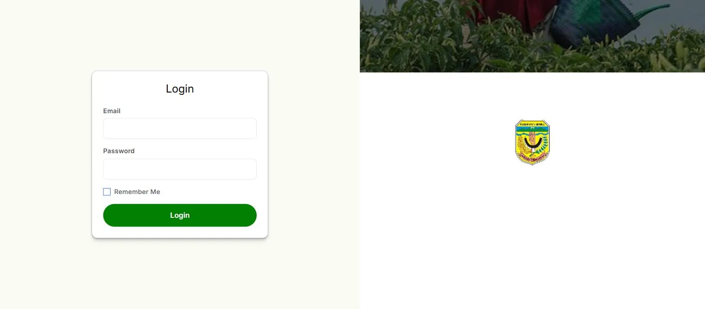

Overview
The regency government needed its food security data in a form officials could actually read. I built the frontend on top of the APIs provided by the backend team.
A food security application for the Mimika Regency government, with a public landing page and a dashboard that turns the data into charts and tables.

The regency government needed its food security data in a form officials could actually read. I built the frontend on top of the APIs provided by the backend team.